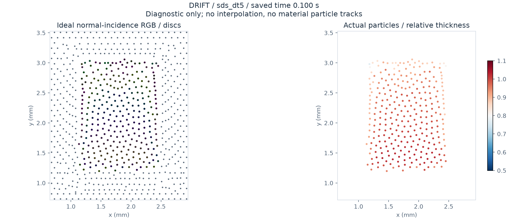
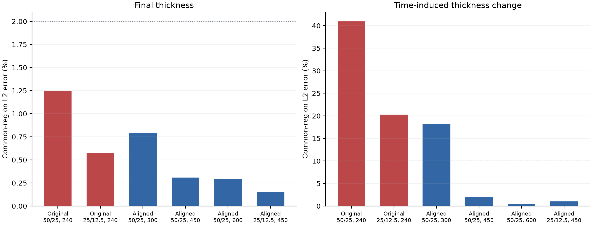
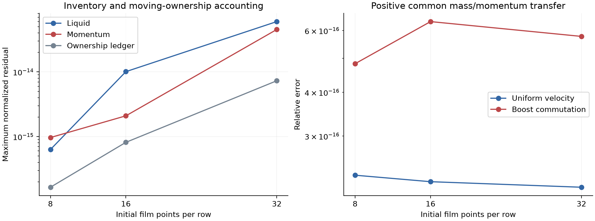
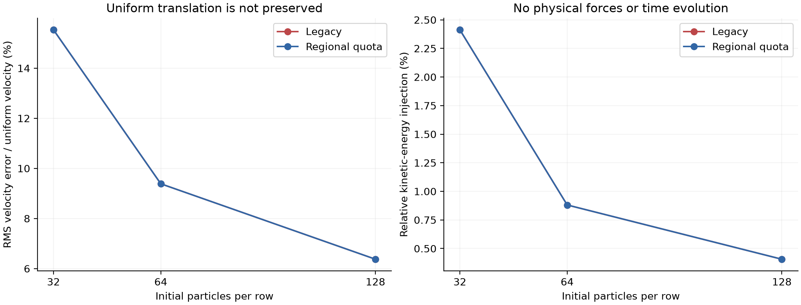
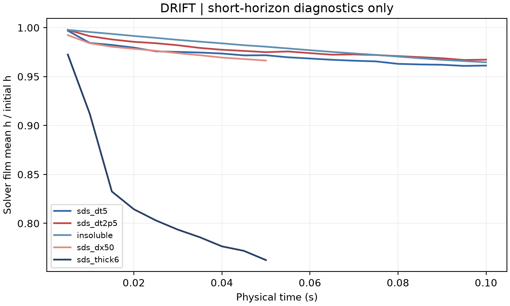
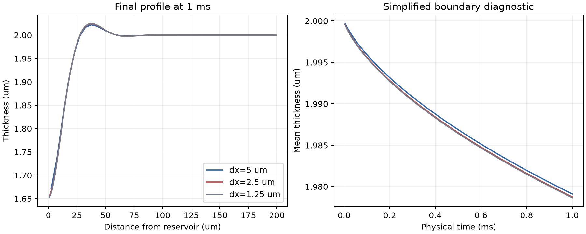

解析边缘交换
从一维夹缩检查进入二维局部边缘，解析薄膜元生成与交换。以守恒接口接入整体粒子膜；检验是否能够独立预测交换系数及薄膜元厚度比。
当前：运动膜与局部边缘已接通，收敛待验证60 个实际保存步的液量／表活几何率可独立复算；已知解析通量在加密后改善。四组规则布局的辅助面积差分检查仍未通过，完整输运协议与 C1 尚未验收。
只减小时间步，保持原有物理模型和判据。最细 0.0625 → 0.03125 微秒配对在 200 微秒时：膜厚变化差异 0.60%，位移差异 1.57%；10、50、200 微秒均低于 2%。
5 次运行、12,001 个接受步完成；空间误差和物理接口通量仍待验证。阅读白底图文报告、真实粒子图和原始数据
完成 8 个黏性算子检查与 8 个实际稳态速度求解。规则／扰动粒子两组的速度误差随加密下降，最细一级约 1.44%／1.39%。切面传功差异有了逐项核对的解释；运动排液与实验验证仍待完成。
原有薄膜轨迹保持不变，完成五次主批次运行与独立核对。1,400 个接受步均满足现有力阈值；找到明显的时间离散损失，以及仍待解释的切面传功差异。
不预设经验排液律，研究膜—弯月面交界处的夹缩、表面活性剂响应与液体交换，如何共同影响条纹下降、边缘再生与黑膜形成。

沿原始“排液 → 边缘再生 → 黑膜”主线展开。下面是候选贡献，尚未证明首创，也不代表已完成。
从一维夹缩检查进入二维局部边缘，解析薄膜元生成与交换。以守恒接口接入整体粒子膜；检验是否能够独立预测交换系数及薄膜元厚度比。
当前：运动膜与局部边缘已接通，收敛待验证先比较面积响应、准备历程和局部平衡极限。有独立证据时才引入有限速率交换，不用目标条纹指数调节吸附系数。
当前：未标定响应诊断已执行冻结参数后比较同装置和保留工况的条纹轨迹，再检验相同化学条件下的压力—厚度与动态黑膜；实际开孔与液环留给对应项目。
待执行：定量实验闭环10/10有界SI算例完成，9/9独立接口账本审计通过。新增几何区域输运和五项毛细功；时间与空间动态场仍未通过收敛门槛。
完整局部状态已连接，16/18时长完成（含2个复现控制）；一对时间加密通过，空间检查仍失败。两组细网格停止前缀、材料允许域与全部区域排液功记录均保留。
原框架膜10ms启动：180次材料跨界，液量／总表活账本残差≤1.72×10⁻¹³。局部微算例实际补液，空间检查仍失败；不作实验验证结论。保留103份原始文件、失败记录及PNG/PDF。
4个200μs主算例完成，最薄处从6μm降到约5.80–5.83μm，薄点位于局部细化起点左侧。18项原生检查与保存步独立公式审计通过；空间、时间和完整法向通量验收仍未完成。
厚度变化更接近数值对照，运动仍未收敛。保持物理接口，只向膜侧延伸细化范围；完整原始数据和失败的验收项均保留。
查看技术报告、PNG/PDF与原始记录 ↗| 阶段 | 需要回答的问题 | 当前状态 | 证据入口 |
|---|---|---|---|
| E0 · 分析协议 | 现有条纹分析器能否恢复已知规律？ | 3 组理想场通过 | 分析器审计 |
| 前置 · 基线与短跑 | 继承二进制、单位和短时算例能否运行？ | 115 检查 / 5 算例 | 双栏回放与结果 |
| E1a · 局部边缘 | 开放边界的质量、能量和离散误差是否可控？ | 6 组简化参照完成 | 参照剖面与守恒 |
| 前置 · 二维边缘与E2响应 | 局部加密能否保留通量与厚度场；有限速率响应是否可区分？ | 135检查 / 80组诊断 | 二维守恒、响应与十倍时长检查 |
| C1前置 · 运动膜接口账本 | 材料携带、排液与重网格如何分别记账，精度是否独立于重映射频率？ | 151检查 / 17原生工况 时间/空间精度未闭环 | 原生账本、频率混杂与未通过关口 |
| C1前置 · 重映射一致性 | 库存与总动量守恒，是否也保持常场、常速度和被动动能？ | 52检查 / 72被动对照 两版候选均未通过 | 常速度反例、原生失败与PNG/PDF图 |
| C1前置 · 共同几何传递 | 粒子区域与加密区域变更支撑时，液量、表活、动量是否共用一致权重？ | 55检查 / 72被动工况 尚未接入真实排液动力学 | 几何支撑、移动所有权账本及场加密 |
| C1前置 · 共享面物理排液 | 局部加密在守恒之外，是否通过变化场、净通量与独立细参照？ | 72检查 / 18有效工况 固定表面；变化误差接近上限 | 独立6.25μm参照、原失败及PNG/PDF |
| E1b · 二维局部 | 夹缩如何生成薄膜元，如何守恒接入整膜？ | 未实现 | 局部收敛 → 接口收支 → 整膜对照 |
| E3–E4 · 主验证 | 能否预测完整条纹轨迹与保留工况？ | 未执行 | 同装置、同材料与冻结参数 |
| E5–E6 · 黑膜与成本 | 能否形成可信的 SI 黑膜，代价是否合理？ | 未验证 | 压力—厚度、动态前沿、全成本 |
实验编号沿用完整规划；E2均匀响应诊断已执行，交换率仍未物理标定；二维运动粒子接口尚未实现。相邻两档误差小，不等于已经证明整体模型收敛。







冻结分析口径，检查边缘夹缩与均匀界面响应，区分几何/初态、边界和交换动力学。
二维局部边缘与保守接口；没有尺度分离就保留在线局部区域，不强造代数通量律。
主实验加保留工况；只有指数变化而无通量和机制证据，则不扩大场景。
检验 SI 黑膜、成本与失效范围。未闭环的部分从最终论文主张中删除。
这是研究安排，不是对机制成立或投稿结果的保证。每次运行保留参数、日志和来源；超过两小时的长模拟须增加半小时监视。
Monier et al. · Self-similar drainage
条纹动力学、装置参数与实验比较。
Vigna-Brummer et al. · Film–meniscus exchange
独立边界通量与交换系数。
Thiele et al. · Soluble-surfactant gradient dynamics
多场热力学先例，不能把变分重写本身作为首创。
Lalli & Giusti · Thin-film modelling
分离压、稳定黑膜与定性边缘再生的数值先例。